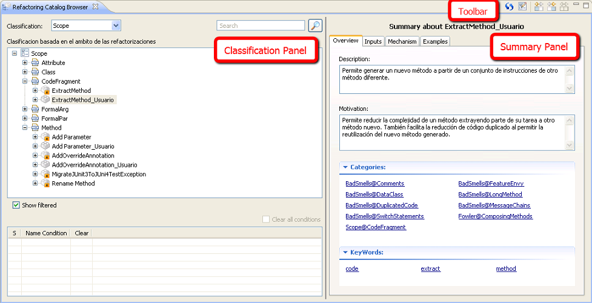

Catálogo de refactorizacionesCatálogo de refactorizaciones
Catálogo de refactorizacionesCatálogo de refactorizaciones
La vista Refactoring Catalog Browser muestra el catálogo de refactorizaciones disponibles, además recoge toda la información asociada a las mismas y permite visualizar la distribución de refactorizaciones según las categorías a las que pertenecen para cada una de las clasificaciones existentes. También ofrece la posibilidad de realizar búsquedas sobre estas creando filtros que poder aplicar.
En esta vista se pueden identificar tres partes diferentes, que son las siguientes:
La barra de herramientas de la vista, que vamos a denominar Refactoring Catalog Browser Toolbar.
Un panel de clasificación de refactorizaciones, que vamos a llamar Classification Panel. Corresponde con el panel izquierdo de la vista.
Un panel de resumen de la información asociada a una refactorización, que vamos a denominar Summary Panel. Corresponde con el panel derecho de la vista.
En la siguiente ilustración se puede apreciar cada una de las partes que acabamos de comentar.
